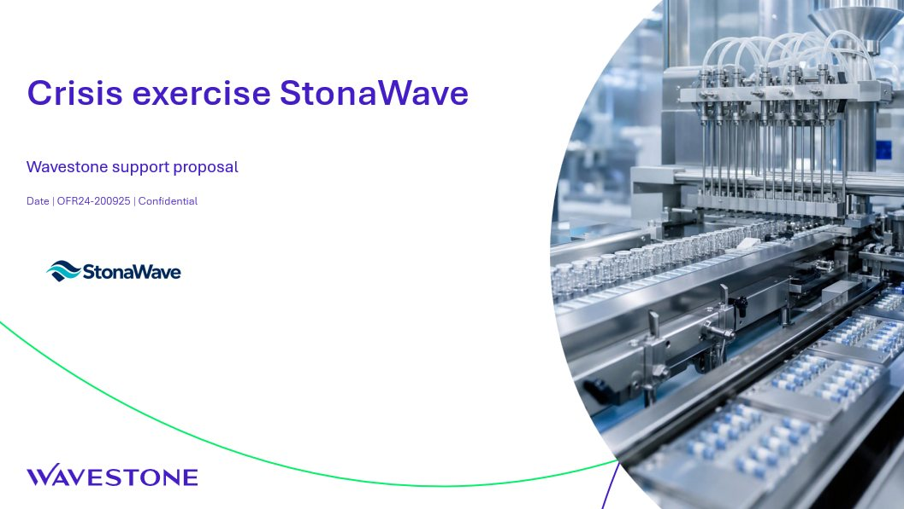

Comment s’en servir en pratique ? Une série de use cases concrets, tirés de notre quotidien, avec les prompts testés, ce que Copilot a fait et ce qu’il reste à vérifier. On commence par PowerPoint et la propale.

Adapter une propale de gestion de crise à un nouveau client avec Copilot dans PowerPoint : contexte, logo, traduction, mise en page, animation, nouvelle phase, relecture complète et visuel généré. 10 prompts, pas à pas.
D’autres cas pratiques arrivent, dans PowerPoint et au-delà (Word, Excel, Outlook). Tu as un prompt ou une astuce qui marche ? Partage-le avec l’équipe CYB AI Maker.
Vérifie le modèle sélectionné dans le volet Copilot, surtout quand la demande touche à la mise en page.
Toutes les slides ou une slide précise, le contexte, le résultat attendu. « Fais plus joli » ne suffit pas.
Noms, chiffres, cohérence d’ensemble : tu as le dernier mot et c’est ta responsabilité.